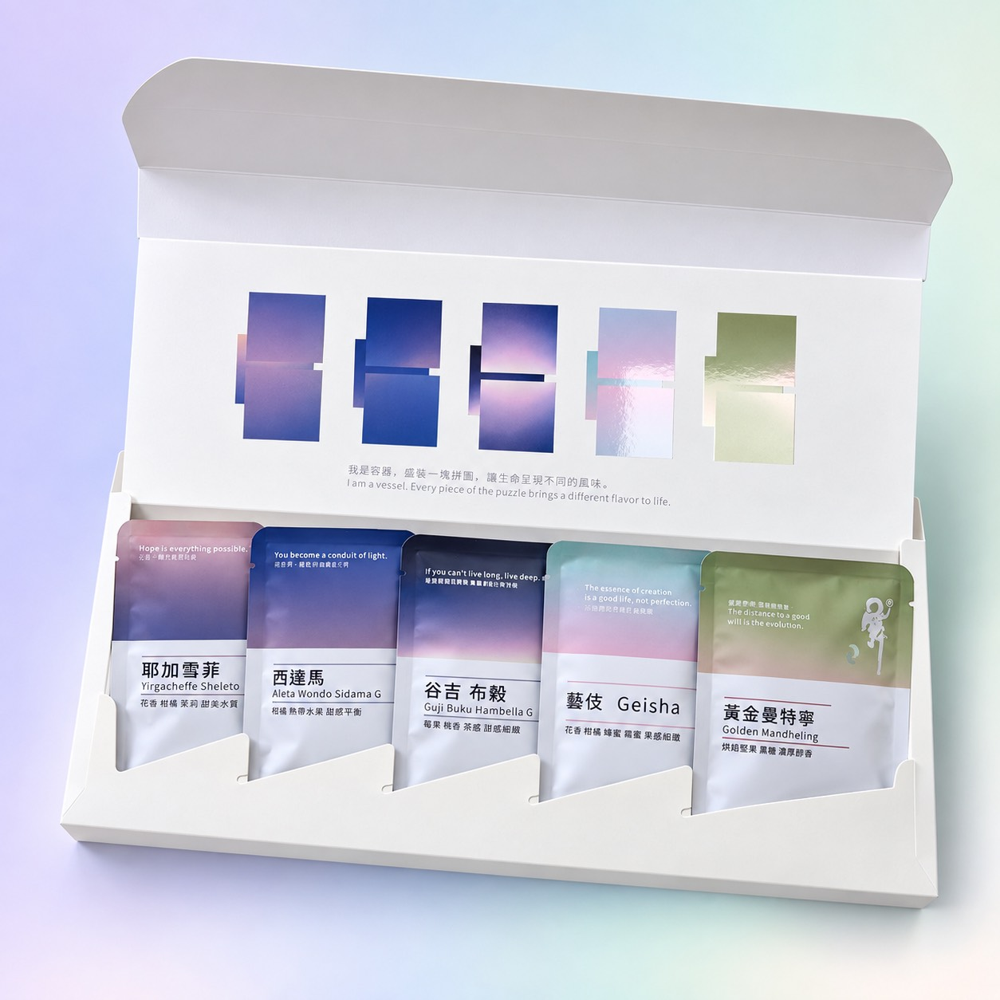
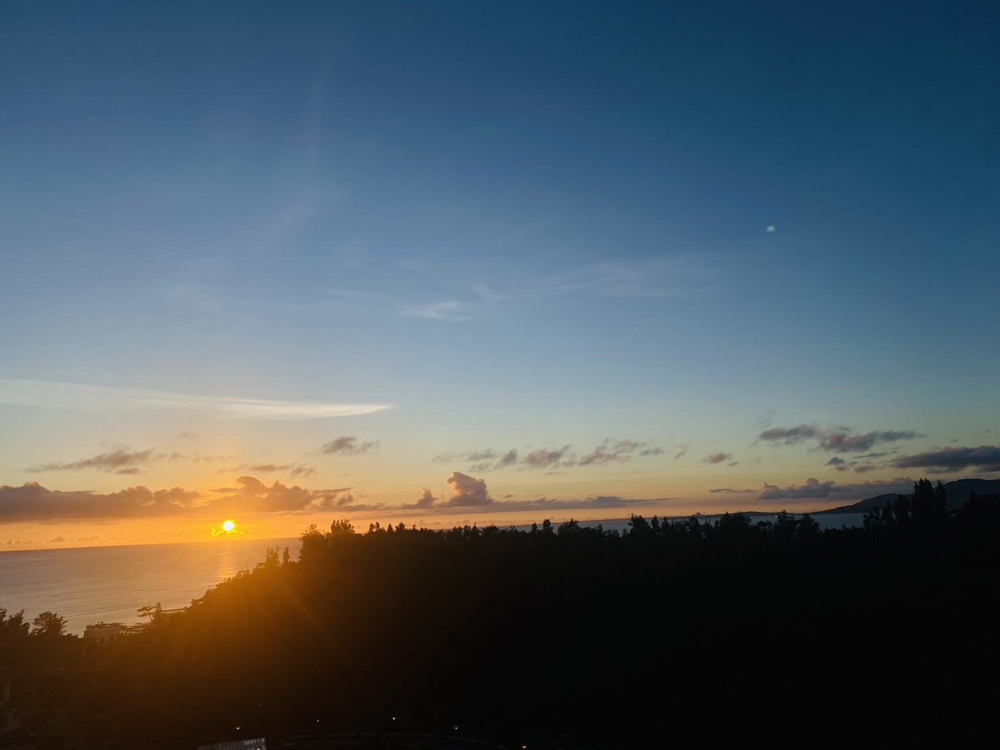

品牌故事|舞荳,是靈魂的語言
新品上市|中秋精品咖啡禮盒

一盒五入、五段天色:耶加雪菲、西達瑪、谷吉布穀、藝伎、黃金曼特寧,每盒 NT$250。 看禮盒介紹與訂購 →
礁溪的天空|時間到咖啡館的一天

黃昏的實景——我們就在這樣的天空下,烘豆、沖咖啡、等你來。上方的天空會隨著你造訪的時刻變化,也可以點右上角的「晨/午/暮」看看一天的顏色。
關於我們的故事
國際認證的堅持
在這個充滿變化與效率至上的時代,也許「認證」不再被商業普遍重視,但我們堅持了十年,只為讓每一位顧客喝到經過英國國際咖啡組織認證的 G1 等級咖啡豆——這是咖啡品質中的頂級標準。層次豐富、餘韻盤旋,冷熱皆宜的穩定風味。
從農場到街頭,安心溯源
一杯好咖啡的旅程,從咖啡種子開始,歷經土壤、氣候、手工採摘與日曬發酵,每一個環節我們都不妥協。我們所選用的豆子,具備完整生產履歷與可溯源性,不僅為好風味把關,也為你的健康護航。
十多年的專注與熱愛
我們堅持:生活是自己創造的,而咖啡,就是生活的一部分。從原料挑選、烘焙工藝到口味設計,每一步都「專注細節,不妥協品質」。我們的烘豆師團隊開發出「曲線烘焙法」,依不同溫層與時間微調,並創立獨有的烘焙號碼標準。
咖啡烘焙介紹
酸甜極致
乾粉帶堅果、奶油與熟果香氣;入口先嚐到水果酸甜感在舌尖綻放,鼻後嗅覺水果香縈繞不散,尾韻回甘。中低溫轉為檸檬調性,冷口感清爽均衡,冷熱皆有不同韻味層次。
平衡口感
保留咖啡豆最自然的香氣與果酸層次,風味曲線乾淨明亮。溫和果酸、清新果香與細緻甜感,降溫後仍保有迷人果韻,尾韻乾淨回甘,從熱到冷每個溫度都有驚喜。
甘甜平衡
一口喝下,你會明白什麼叫「值得等待的風味」。它有野性、有甜美、有記憶留下的香氣;適合喜愛中深焙、濃厚風味、重視香氣餘韻的品飲者,也適合濾沖式或義式咖啡機,加入牛奶更凸顯甜味。
成熟風味
苦中帶韻,像一段經過淬鍊的回憶,最適合靜靜品味。濃烈中帶著焦糖的沉穩,與牛奶搭配依舊不被稀釋,是重口味愛好者的日常儀式。
凍乾咖啡粉|即溶也能喝出精品等級
我們使用「超臨界萃取技術」,將咖啡豆的香氣與風味物質完整萃取後,再透過冷凍乾燥法(凍乾)處理,轉化為品質穩定、保留原味的即溶咖啡粉。還原一杯精品咖啡的靈魂,只需熱水一沖。
生活雖快,品質不能快轉。你值得用最簡單的方式,喝到最用心的咖啡。